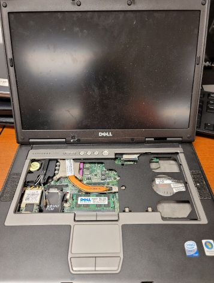
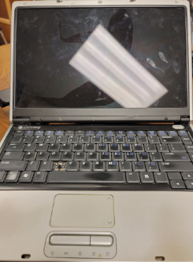

| |
Blog postsMay 18th, 2022 7:51AMI wrote something about this year's 1% of cicadas emerging this may/june that are in fact, 17 year cicadas off cycle.April 30th, 2022 7:30AMYesterday, I managed to hassle scrappers for a beat up Toshiba 486 laptop. I'm sorry, but I couldn't see it get fucked over. It'll still have great use as a retro USDT! Also, updating the Anime page a bit. April 21st, 2022 2:28PMApril 1st, 2022 1:08PMWell, 4 months in with one pretty depressing year so far. And no, I do not celebrate April Fools. I got my Dual 1(.07)GHz G4 back in action after several months of a card that I ultimately failed to overclock. The safe maximum for early production dual 1GHz QuickSilver cards is 1.07GHz. Do NOT go higher or else you risk damaging your card!! Also, I started Symphogear. :) March 15th, 2022 10:08AMThese past 2 years have been emotionally depressing for the most part. Just thought I'd say that, I am always under so much stress to the point where I can't always get the things I want to get done, well, finished up. March 4th, 2022 12:42PMWhy haven't my changes been implemented days ago...? Just realized that. I got a Dell XPS 720 2 weeks ago and I had some fun with it! Obviously a lot has changed since and I also managed to procure a Sony VAIO VPCF115FM, an iMac G4/800, and a couple of old Kindle Fire tablets from the 1st triannual big trash pickup of the year. The VAIO has become my school laptop and the iMac G4 is going to be for a project which involves swapping in a PowerPC 7455B to achieve a stable 1.2GHz clock speed, and perhaps even add L3 cache. Also, the VAIO managed to get to 115Hz through the nVidia control panel. I also brought my iBook to school today to show people. The battery is still holding an excellent charge, yet some parts of that system have seen better days. Personally, I am not too loyal about the design of that laptop, but it's the only G3 laptop I have... I even got it to 433MHz, upped the RAM to 544MB, and... put a dying hard drive in years ago. I need to fix that!! Thought of using an SD to IDE adapter, but I rarely had luck with that. Might need to hit up StarTech... Also I will get to work on the PowerPC overclock page soon, I promise. February 17th, 2022 7:49AMNot much happened just yet, but I was given a Crestline iGPU D830 for parts. I have some leftover D820 stuff around from another partout I did, so I'm sure I can get this one operational. Who knows, it's probably going to work nicer than my D630... especially considering it has a better heatsink. Seeing as how this D830 runs an iGPU, it will have a much better chance of working. However, I've seen that some of this friend's laptops had some liquid damage, and one of them was a D630 that failed to turn on due to a short. I have pinpointed the issue to corrosion on the WWAN slot, though. Hopefully everyone is doing well today~ EDIT 2:02PM:The D830 turns on, but the battery is completely shot. ;_; February 16th, 2022 2:17PMWhile dealing with TikTok dwellers in my precal class, I have made a bit of progress on further optimizing this website's design. Yes, I did use an old web template from 2002. I forgot where I got it as the original files where I edited the site initially have been long gone due to my black MacBook having a disk failure. Doing well otherwise, and had a strange dream last night. February 15th, 2022 9:39AMFeeling much better today. I've also taken a liking for more of the Dell Latitude D-series laptops. I used to hate the D630 for no good reason, but mine was just part of a bad batch. The one I'm using right now has a better display and a much nicer keyboard. I also got a D820 a week ago, but unfortunately the nVIDIA dGPU is going out. Hopefully I could fix that some day... February 14th, 2022 9:19AMHappy valentine's day to all of you! Hopefully someone out there got you something~ In my case, no. However, I was given an old Gateway 3560 laptop from a friend. I don't think I will have much use for it but the 1.7GHz Pentium M makes for a good 2.26 once the FSB is overclocked on another system. It's basically a bastardized D600 with a weird 1280x768 display and Intel Extreme Graphics. The inverter is out, screen is broken, can't 'C' one of the keys, and not to mention the battery was falling apart. That definitely won't pass airport security. Well I hope my visitors are doing well today. I am most surely not. It's always February or sometime around Valentine's day that just fucks up for me. February 13th, 2022 9:21PMToday sucked, as I got a horrible headache and felt absolutely shut down. If I look on the bright side of things, this morning I went on my first salvage trip in a while! Honestly, today was a bit barren as not much was seen. However, I finally found a nice case for my 975X motherboard; an In Win S564 from 2007. This case exceeded my expectations for what was at first a no-name case. It's on Alienware P1 levels of rigidity, and it can fit some longer graphics cards. The motherboard it came with too is interesting; an MSI PM8M3-V. It's one of those Socket 775 motherboards with an AGP slot and DDR memory. Expect a sleeper Windows 98 build soon~ February 11th, 2022 8:50PMYep, site is on a new domain now. Thank you Fleepy/Chen for providing a subdomain to host this page on. Also, zd8000 fixation still going wild~ January 4th, 2022 7:06PMI have just managed to find a copy of the Sony VAIO PCG-K47 BIOS (R0108X3) which has ended up working flawlessly on my long-neglected PCG-K23. The newer BIOS supports Prescott Pentium 4 CPUs which brings a much wider array of application and OS options for these laptops. It's obviously not much now, but these are arguably the last nice VAIOs sony built, despite their choice of processor. My K23 has grown on me quite a bit and having it with a much faster processor is a welcome change. I keep forgetting I am running this computer on nearly a gig of RAM... it's still bearable now with the right set of tools!
December 30th, 2021 10:35PMI am working on doing a slight redesign for the website. I'm keeping the style yet I am making it more colorful! December 23rd, 2021 4:40PMBeen inactive for a while! I got a good influx of computers in and I will probably do a writeup on my top items that I own as a whole. Also, merry christmas to all of you. Hopefully in 2022 we won't see the word "hell" become offensive. November 27th, 2021 9:14PMGod, I have not touched this in a while. My macbooks that I used for writing the site started to have some issues. Also, thinking of moving the domain to Neocities or Geocities.ws November 9th, 2021 9:42AMThe Magic Mouse SUCKS!I mean, the actual mouse is okay, but the battery contacts? PURE GARBAGE. Yes, I know Apple put out a Magic Mouse 2 like, 6 years ago... but the original one still remains in good use by many. I use a PowerBook G4 to write this site, and the trackpad isn't sufficient. Yes, I know, it was what we had in 2005 unless you bought the wrong laptop that gave you a BIOS error once you upgraded the hard drive. I used the magic mouse for a while and the words "Connection Lost" with the MM icon have been engraved into my brain ever since. The battery contacts in the original Magic Mouse are somewhat... insufficient at providing good contact. Maybe if Apple used a spring like everyone else did along with a convex positive terminal, this issue would have been avoided. Those are tried and true battery terminal styles and provide GREAT contact. We're not stupid enough to bend the spring... or at least, most of us aren't. I swear, most of Apple's products are overdesigned... and a little underdesigned. Put an eMac and an iMac G3 side by side... the eMac is far more robust in its build quality while the iMac G3 can't hold its own weight. The magic mouse is working as of this writing, but I swear it'll lose connection again due to the shitty battery contacts Apple put upon that thing. As for the MM2, I actually have several of those, but it's just like a slimmer Pro Mouse when you connect it to an older Mac. November 9th, 2021 9:19AMUsing a PowerBook G4 to write further updates to the site at the moment. Still works great even in a day and age where idiotic JS writers make the biggest websites on the internet! November 8th, 2021 9:38AMMacBook's HDD just died a slow and painful death. Knew I should have put an SSD in... November 8th, 2021 7:41AMJust put in a placeholder for the files page. Will post things on there soon, but not sure right now. Plus, I managed to put error pages in. November 7th, 2021 6:00PMHave a G3 PDQ that's pretty damn broken. Why do the damn chargers cost a fortune?? November 6th, 2021 3:31PMI need a better bike. November 5th, 2021 2:09PMI am writing this during some sort of cheering event at school and I am the only one here in the classroom still. Just need to keep working on the site... previous posts: k24a1.blogspot.com |